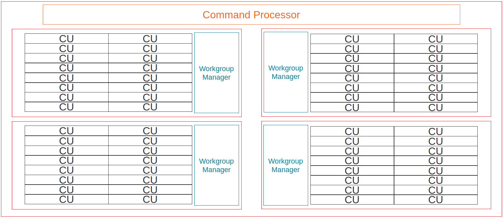
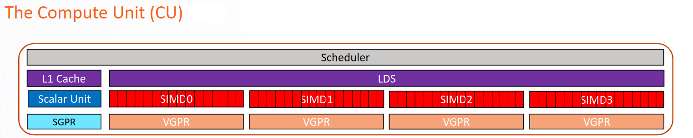
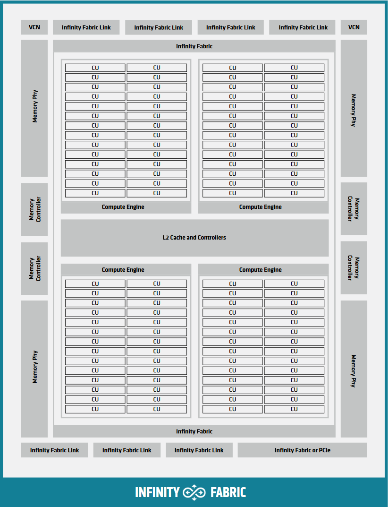
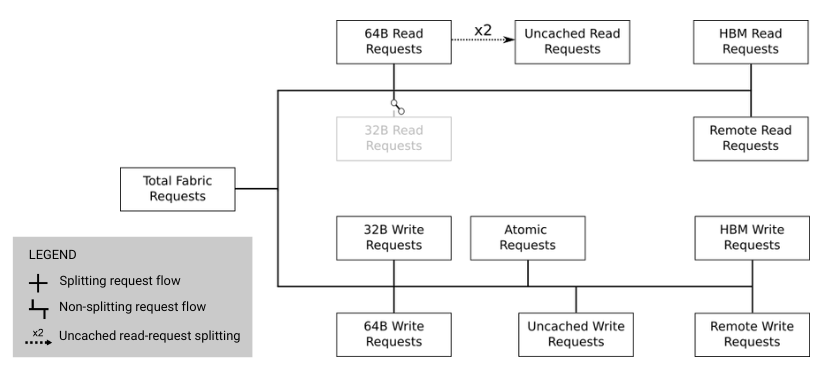
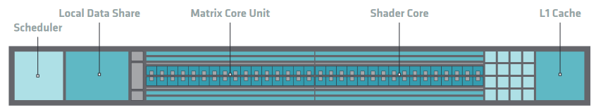
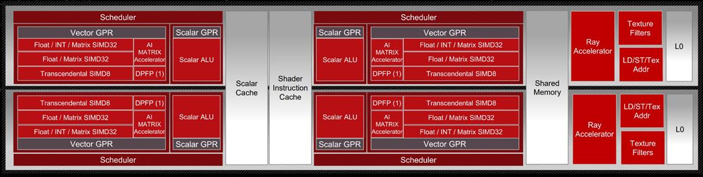

Hardware implementation#
This topic describes the hardware architecture of AMD GPUs supported by HIP, focusing on the internal organization and operation of GPU hardware components. Understanding these hardware details helps you optimize GPU applications and achieve maximum performance.
Overall GPU architecture#
AMD GPUs consist of interconnected blocks of digital circuits that work together to execute complex parallel computing tasks. Unlike central processing units (CPUs), which dedicate significant silicon area to instruction flow control, branch prediction, and complex caching hierarchies, GPUs allocate the majority of their die area to arithmetic pipelines. This design choice enables extreme throughput density for data-parallel workloads. The architecture is organized hierarchically to enable massive parallelism while efficiently managing resources.
Command processor and control#
The command processor (CP) serves as the primary interface between the CPU and GPU, receiving and distributing commands for execution. The CP consists of two main components:
Command processor fetcher (CPF): Fetches commands from memory and passes them to the command processor packet processor (CPC) for processing.
Command processor packet processor (CPC): A microcontroller that decodes the fetched commands and dispatches kernels to the workgroup processors for scheduling.
The command processor handles several types of operations:
Kernel launches, which are forwarded to asynchronous compute engines (ACEs)
Memory transfers, which are delegated to direct memory access (DMA) engines
Synchronization operations and memory fences
DMA engines handle memory transfers between CPU and GPU memory without CPU involvement after initialization. Most GPUs contain two DMA engines, enabling concurrent bidirectional transfers to better utilize PCIe bandwidth. The DMA engines fetch data in small chunks and can process transfers in parallel but cannot handle multiple copy commands on the same engine simultaneously.
Asynchronous compute engines (ACEs) break down kernels into workgroups for distribution to shader processor input (SPI) blocks. Multiple ACEs enable concurrent kernel execution, with each ACE capable of dispatching one kernel at a time. ACEs process commands from different queues asynchronously, enabling overlap between different kernel executions and memory operations.
Hierarchical organization#
The GPU organizes compute resources in a three-level hierarchy that enables modular design and resource sharing:
Shader engines (SE): Top-level organizational units containing multiple shader arrays and shared resources
Shader arrays: Groups of compute units (CUs) sharing instruction and scalar caches
Compute units (CU): Basic execution units containing the arithmetic logic units (ALUs) and registers for thread execution

Hierarchical organization of compute units into shader engines#
This hierarchical design allows different GPU configurations using the same underlying architecture.
Shader engine components#
Shader engines group multiple compute units together, sharing resources to improve efficiency and reduce redundancy. Each shader engine contains several key components shared across its compute units.
Workgroup manager (SPI)#
The workgroup manager, also called the shader processor input (SPI), bridges the command processor and compute units. After the CP processes a kernel dispatch, the SPI:
Receives workgroups from the ACEs
Schedules workgroups onto available compute units
Initializes registers with kernel parameters
Ensures all warps of a workgroup execute on the same CU for synchronization
Monitors resource availability and queues workgroups when resources are exhausted
The SPI tracks four critical resources that limit concurrent execution:
warp slots (execution contexts)
Vector general-purpose registers (VGPRs)
Scalar general-purpose registers (SGPRs)
Local data share (LDS) memory
Workgroup-to-CU mapping is non-deterministic and based on available resources. You should not assume any specific mapping pattern, as the same kernel launched multiple times can have different workgroup distributions.
Scalar L1 data cache (sL1D)#
The scalar L1 data cache (sL1D) serves scalar memory operations from multiple CUs within a shader array. The sL1D is shared between CUs and caches data that is uniform across a warp, including:
Kernel arguments and pointers
Grid and block dimensions
Constants accessed uniformly across threads
Data from
__constant__memory when accessed uniformly
Unlike the vector L1 cache, the sL1D doesn’t use a “hit-on-miss” approach, meaning subsequent requests to the same pending cache line count as duplicated misses rather than hits.
L1 instruction cache (L1I)#
The L1 instruction cache (L1I) is a read-only cache shared between multiple CUs in a shader array. Like the sL1D, it’s backed by the L2 cache and doesn’t use the “hit-on-miss” approach. The L1I stores kernel instructions fetched by the compute units, reducing instruction fetch latency and L2 cache pressure.
Compute unit architecture#
The compute unit (CU) is the fundamental execution block of AMD GPUs, serving as the atomic building block for massive parallelism. Each CU is responsible for executing kernels through its various specialized components and pipelines. Data flows into these pipelines, undergoes arithmetic transformation, and exits as results, to maximize the number of such transformations per clock cycle.
CUs enable latency hiding through massive hardware multithreading. A single CU can manage thousands of concurrent threads organized as a number of warps, each containing 32 (RDNA) or 64 (CDNA) threads. This massive concurrency allows the hardware to hide memory access latency by executing other warps while some wait for data.

Internal architecture of an AMD CDNA compute unit#
Sequencer and scheduling#
The instruction sequencer (SQ) serves as the control center of each compute unit, managing instruction flow through the execution pipelines. The sequencer maintains warp state and coordinates instruction execution across different functional units.
Warp organization: The sequencer organizes active warps into four pools, each containing slots for up to ten warps (eight on the CDNA2 MI200 Series). Each slot includes:
Warp-level registers (program counter, execution mask, and others)
Instruction buffer for prefetched instructions
State information for scheduling decisions
This organization theoretically allows up to 40 concurrent warps per CU, though actual occupancy is typically limited by register and LDS usage.
Instruction fetching: The fetch arbiter selects one warp per cycle to fetch instructions from memory, prioritizing the oldest warps. Each CU can fetch up to 32 bytes (4-8 instructions) per cycle.
Instruction issuing: The issue arbiter determines which instructions execute each cycle, selecting warps from one pool per cycle in round-robin fashion. The arbiter can issue multiple instructions per cycle to different execution units, with a theoretical maximum of five instructions per cycle:
One VALU instruction
One vector memory operation
One SALU and/or scalar memory operation
One LDS operation
One branch operation
Instructions always issue at warp granularity, with all threads in the warp executing the same instruction in lockstep. The hardware can perform single-cycle context switching between warps with zero overhead, as all warp contexts remain resident on the CU. This enables efficient latency hiding, allowing the CU to switch to another warp immediately when the current warp encounters a stall condition such as a memory access.
Execution pipelines#
Each CU contains multiple specialized execution pipelines that process different types of instructions in parallel, enabling efficient utilization of the hardware resources.
Vector arithmetic logic unit (VALU)#
The VALU executes vector instructions across entire warps, with each thread potentially operating on different data. For CDNA architectures, the VALU consists of:
Four SIMD processors: Each containing 16 single-precision ALUs (or equivalent), for 64 total ALUs per CU. In CDNA3, these are SIMD64 pipelines that can execute 256 operations per cycle per CU.
Vector register files: 256-512 KiB of VGPR storage split across the four SIMDs. VGPRs are organized as 32-bit lanes, providing flexibility for mixed-precision computations.
Instruction buffers: Storage for up to 8-10 warps per SIMD
On architectures with 64-thread warps and 16-instruction wide SIMD units, executing one instruction takes four cycles (one cycle per 16 threads). The four SIMD design ensures full utilization when sufficient warps are available, as a new instruction can issue to each SIMD every cycle.
The VALU serves as the primary arithmetic engine, executing the majority of computation in GPU kernels. Data flows into these pipelines, undergoes arithmetic transformation, and exits as results, with the goal of maximizing the number of such transformations per clock cycle.
For CDNA architectures with matrix operations, the VALU also dispatches matrix fused multiply-add (MFMA) instructions to specialized matrix units.
Register pressure and occupancy#
Register usage directly impacts CU occupancy. Each warp requires a portion of the finite VGPR and SGPR pools. Higher register usage per thread reduces the maximum number of concurrent warps, potentially limiting the CU’s ability to hide latency. Mixed-precision workloads can optimize register usage by storing lower-precision values in fewer registers.
Scalar arithmetic logic unit (SALU)#
The SALU executes instructions uniformly across all threads in a warp, handling operations such as:
Control flow (branches, loops)
Address calculations
Loading kernel arguments and constants
Managing warp-uniform values
The SALU includes:
A scalar processor for arithmetic and logic operations
12.5 KiB of SGPR storage per CU
A scalar memory (SMEM) unit for memory operations
Scalar operations reduce pressure on vector units and registers by handling uniform computations efficiently.
Vector memory unit (VMEM)#
The VMEM unit handles all vector memory operations, including loads, stores, and atomic operations. Each thread supplies its own address and data, though the hardware optimizes access through memory coalescing when threads access nearby addresses. The VMEM unit connects to the vector L1 cache and implements both address generation and coalescing logic.
Branch unit#
The branch unit executes jumps and branches for control flow changes affecting entire warps. Note that the branch unit handles warp-level control flow, not execution mask updates for thread divergence, which are handled through predication.
Special function unit (SFU)#
The special function units accelerate certain arithmetic operations that are too complex and/or costly to implement purely within the standard vector ALUs.
SFUs are responsible for executing transcendental and reciprocal mathematical
functions, operations such as exp, log, sin, cos, rcp
(reciprocal), and rsqrt (reciprocal square root). These are heavily used
in scientific, physics, and machine learning workloads, particularly in
activation functions such as GELU, sigmoid, and/or softmax.
Each CU includes a set of specialized pipelines and/or transcendental function units (TFUs) that handle these operations with dedicated hardware. While their throughput is lower than that of the primary SIMD pipelines, they enable these functions to execute efficiently without consuming general ALU bandwidth.
From the compiler’s perspective, these operations map to specific AMDGPU ISA instructions, such as:
v_exp_f32- compute exponential base ev_log_f32- compute natural logarithmv_sin_f32,v_cos_f32- compute sine and/or cosinev_rsq_f32,v_rcp_f32- compute reciprocal and/or reciprocal square root
In CDNA3-based GPUs (such as MI300), SFU throughput and latency have been
tuned for deep learning primitives. For instance, exponentiation (exp) and
logarithm (log) functions are now pipelined to complete in a few cycles
per lane, allowing vectorized activation functions in large-scale matrix
workloads to execute without significant stalls.
For programmers targeting ROCm and/or HIP, these SFU-accelerated operations
are typically accessed through math intrinsics such as __expf, __logf,
and/or __sinf, which the compiler lowers to the corresponding AMDGPU ISA
instructions at compile time.
Load/store unit (LSU)#
The load/store units handle the transfer of data between the compute units and the GPU’s memory subsystems. They are responsible for issuing, tracking, and retiring memory operations, including loads from and stores to global memory, local shared memory, and caches, for thousands of concurrent threads.
Each CU includes a set of LSUs tightly integrated with its vector
and scalar pipelines. These units handle memory instructions generated by
active warps, such as buffer_load, buffer_store, and
flat_load_dword, and route them through the GPU’s hierarchical memory
system.
The LSU’s responsibilities include:
Managing vector memory accesses for SIMD instructions
Coordinating local data share (LDS) reads and writes
Accessing the L0 and/or L1 caches and forwarding requests to the L2 cache and high-bandwidth memory (HBM)
Handling synchronization and atomic operations between threads and workgroups
LSUs manage thousands of outstanding memory requests per GPU, dynamically scheduling them to hide memory latency. While arithmetic pipelines continue executing other warps, the LSUs maintain queues of pending transactions and reorder responses as data returns from memory.
Matrix fused multiply-add (MFMA)#
CDNA architectures (MI100 and newer) include specialized matrix acceleration
units for high-throughput matrix operations. These units execute independently
from other VALU operations, allowing overlap between matrix and vector
computations. MFMA units support various data types including INT8,
FP16, BF16, and FP32, with different throughput characteristics
for each.
Matrix cores are GPU execution units that perform large-scale matrix operations in a single instruction. In AMD architectures, these units are formally known as MFMA (matrix fused multiply-add) units, the core hardware blocks responsible for accelerating deep learning, high-performance computing (HPC), and dense linear-algebra workloads on modern Instinct GPUs.
Operating on entire tiles of matrices per instruction allows MFMA units to deliver far greater arithmetic throughput and energy efficiency than scalar and/or vector ALUs. Rather than fetching and decoding thousands of per-element multiply-add instructions, each MFMA instruction processes an entire matrix fragment, drastically reducing power per operation and increasing overall throughput. The MFMA units implement a mini-systolic array design that efficiently processes matrix tiles.
An example MFMA instruction from the AMDGPU ISA is:
v_mfma_f32_16x16x4f16 v[0:15], v[16:31], v[32:47], v[0:15]
This instruction performs a matrix multiplication and accumulation
\(\pmb{D}=\pmb{A} \times \pmb{B} + \pmb{C}\), where the fragments
\(\pmb{A}\), \(\pmb{B}\), and \(\pmb{C}\) are stored in VGPRs.
The suffix 16x16x4f16 indicates a tile size of \(16 \times 16\), with
an inner dimension of \(4\), operating on half-precision (FP16) inputs and
accumulating into 32-bit floating-point outputs.
Programmers can access MFMA functionality at multiple levels: through optimized libraries, compiler intrinsics, and/or inline assembly, providing flexibility for different use cases.
The MFMA units use both standard VGPRs and additional accumulation VGPRs (AGPRs) on supported architectures, providing up to 512 KiB of combined register storage per CU.
Data movement engine (CDNA 3 / CDNA 4)#
CDNA 3 and CDNA 4 architectures include specialized Data Movement Engine (DME) hardware units designed to accelerate access to multi-dimensional tensor data in GPU memory. DMEs perform high-throughput, low-overhead copies between global memory (HBM) and the on-chip memory hierarchy, particularly the Local Data Share (LDS) and L0 and/or L1 caches, without consuming compute resources.
A DME issues bulk memory transactions for contiguous and/or affine data regions, such as tensors laid out as multi-dimensional arrays in global memory. The hardware computes memory addresses for large block transfers in parallel, offloading this work from the SIMD pipelines and reducing pressure on both the register file and the instruction scheduler. This enables higher sustained bandwidth and lower latency for operations involving tiled matrix and/or tensor data.
In practice, DMEs handle transfers of the form \(\text{addr}=\text{stride} \times \text{index} + \text{offset}\) across many threads and dimensions simultaneously. By performing these affine address calculations directly in hardware, the DME avoids the need for per-thread address arithmetic, freeing up scalar ALUs and registers for computation.
The DME design provides two key advantages:
Resource decoupling: By removing large tensor copies from the main execution pipelines, the CU can continue executing arithmetic instructions while data movement occurs in the background.
Asynchronous execution model: A single warp can issue a DME copy command, immediately resume computation, and later synchronize only when the transfer has completed. This enables producer-consumer parallelism.
Programmers can access this functionality through asynchronous copy intrinsics
in ROCm, such as __builtin_amdgcn_async_work_group_copy, which map
directly to hardware-level DME operations. These intrinsics allow explicit
control over data transfer overlap, synchronization, and cache placement.
Vector L1 cache#
Each CU contains a dedicated vector L1 data cache (vL1D) serving vector memory operations. Key characteristics include:
Write-through design (writes go directly to L2)
Optimization for high-bandwidth streaming access patterns
Coherent with other CUs through software management
Typical size of 16 KB per CU
The vector cache tags are checked for all vector memory operations, with misses forwarded to the L2 cache. The write-through design simplifies coherence at the cost of write bandwidth.
Memory hierarchy and system#
The GPU memory system provides the bandwidth and capacity needed for massive parallel computation while managing data coherence and access efficiency.
Memory organization#

CDNA2 Graphics Compute Die organization showing memory subsystem#
AMD GPUs typically use high-bandwidth memory (HBM) for data-intensive workloads, providing significantly higher bandwidth than traditional GDDR memory at the cost of slightly higher latency. HBM achieves this through vertical stacking of memory dies and wide memory buses, enabling massive parallel access to memory channels.
The memory system includes:
Memory channels: Multiple independent memory controllers (typically 8-16)
L2 cache banks: Distributed cache banks serving as the coherence point
Infinity Fabric: High-speed interconnect for data routing
L2 cache architecture#
The L2 cache serves as the coherence point for all GPU memory accesses and is shared by all compute units. The L2 consists of multiple independent channels (32 on CDNA GPUs at 256-byte interleaving) that operate in parallel.

L2 cache to Infinity Fabric transaction flow#
Key characteristics:
Channel organization: Each channel handles a portion of the address space, with addresses interleaved across channels for load balancing.
Hit-on-miss behavior: If a request arrives for a pending cache line fill, it counts as a hit, improving the effective hit rate.
Write coalescing: Multiple writes to the same cache line are combined.
Atomic operation support: Atomics execute directly in the L2 cache for coherence.
L2-Fabric interface: Requests missing in L2 are routed through Infinity Fabric to the appropriate memory location, which could be:
Local HBM on the same GPU
Remote GPU memory (in multi-GPU systems)
System memory (CPU DRAM)
The interface categorizes requests by type (read and/or write), size (32B and/or 64B), and destination for optimal routing.
Memory coherence#
GPU memory coherence differs significantly from CPU designs to optimize for throughput over latency:
Write-through L1 caches: All writes update both L1 and L2, ensuring L2 always has the latest data. This eliminates the need for complex coherence protocols between L1 caches but requires higher write bandwidth.
Software-managed coherence: Coherence between CUs requires explicit synchronization through:
Memory fences for ordering
Cache invalidation instructions
Atomic operations (executed at L2 level)
Kernel boundaries (implicit synchronization)
Write combining: To handle partial cache line updates from different CUs, the GPU uses write masks indicating which bytes to update. This prevents false sharing issues while maintaining correctness.
Memory coalescing#
Memory coalescing combines memory accesses from multiple threads into fewer transactions, significantly improving bandwidth utilization. The coalescing hardware in the VMEM unit analyzes addresses from all threads in a warp and groups them into the minimum number of cache line requests.
Coalesced access pattern: When consecutive threads access consecutive memory addresses, the hardware can combine all 64 thread requests into as few as 4-8 cache line requests (depending on data size and alignment).
Non-coalesced access pattern: When threads access widely separated addresses, each thread can generate a separate memory transaction, reducing effective bandwidth by up to 16x or more.
To achieve optimal memory performance:
Ensure consecutive threads access consecutive memory addresses
Align data structures to cache line boundaries (64B and/or 128B)
Use structure-of-arrays rather than array-of-structures layouts
Consider padding to avoid bank conflicts
Architecture variants#
AMD supports multiple GPU architecture families optimized for different use cases while maintaining HIP compatibility.
CDNA architecture#
CDNA (Compute DNA) specializes in high-performance computing and machine learning workloads. Key features include:

CDNA3 compute unit with matrix acceleration#
Matrix Core Unit: Specialized hardware for matrix multiply-accumulate
operations, providing significantly more throughput than vector units for
supported operations. Matrix cores support multiple precisions (INT8,
FP16, BF16, FP32) with varying performance characteristics.
Accumulation VGPRs (AGPRs): Additional register file space (up to 256 KB)
dedicated to matrix accumulation, doubling the available register storage for
matrix operations. Data movement between VGPRs and AGPRs uses specialized
instructions (v_accvgpr_*).
Enhanced memory bandwidth: CDNA GPUs typically use HBM2, HBM2e, and/or HBM3 memory technology.
Multi-die designs: CDNA2 (MI250) and CDNA3 (MI300) use chiplet architectures with multiple dies connected through high-speed links, scaling to higher compute and memory capacities.
RDNA architecture#
RDNA optimizes for graphics and lower-latency compute workloads through fundamental architectural changes:

RDNA3 work group processor architecture#
Wave32 execution: Primary execution mode uses 32-thread warps, reducing divergence penalties and register pressure.
Dual compute units: The work group processor (WGP) replaces standalone CUs, containing two closely coupled compute units sharing resources:
Each CU has two 32-wide SIMD units
Warps execute in a single cycle on 32-wide SIMDs
Reduced instruction latency improves responsiveness
Three-level cache hierarchy:
L0 cache: Per-CU cache
L1 cache: Shared between CUs in a WGP (new intermediate level)
L2 cache: Global cache shared across all WGPs
128-byte cache lines: Aligning with Wave32 access patterns (32 threads × 4 bytes = 128 bytes).
These RDNA optimizations target gaming workloads where latency matters more than pure throughput, though the architecture remains capable for general compute tasks.
Performance considerations#
Understanding hardware characteristics helps you optimize GPU applications for maximum performance.
Occupancy and resource limits#
Occupancy measures the ratio of active warps to maximum possible warps on a CU. Higher occupancy generally improves latency hiding but is limited by:
Register usage: Each warp requires VGPRs and SGPRs from finite pools
LDS allocation: Shared memory used per workgroup
warp slots: Fixed number of execution contexts per CU
Workgroup size: Smaller workgroups can waste resources
Balancing these resources is critical for achieving optimal occupancy. Tools
such as rocprofv3 can help analyze occupancy and identify limiting
factors.
Latency hiding through multithreading#
GPUs hide memory and instruction latency through massive hardware multithreading rather than complex CPU techniques such as out-of-order execution and/or speculation. With sufficient warps:
Memory latency is hidden by executing other warps during waits
Pipeline latencies are covered by round-robin warp scheduling
No context switch overhead as all contexts remain resident
The hardware can switch between warps every cycle, maintaining high ALU utilization even with long-latency operations in flight.
Memory bandwidth utilization#
Effective memory bandwidth depends on access patterns:
Coalesced access: Can achieve 70-90% of peak bandwidth
Random access: Might achieve only 5-15% of peak bandwidth
Bank conflicts: Can serialize LDS access, reducing throughput
Memory-bound kernels should focus on:
Maximizing coalescing through proper data layout
Prefetching and data reuse in LDS
Balancing computation with memory access
Using appropriate cache policies
Hardware-specific optimizations#
Different AMD GPU architectures benefit from tailored optimizations:
For CDNA:
Optimize for 64-thread warp granularity
Leverage matrix cores for applicable algorithms
Consider AGPR usage for register spilling
For RDNA:
Design for 32-thread warp execution
Utilize improved divergence handling
Take advantage of additional cache level
Architecture-agnostic:
Minimize divergent control flow
Ensure memory access coalescing
Balance resource usage for occupancy
Overlap computation with memory access
Summary#
AMD GPU hardware architecture provides massive parallelism through hierarchical organization of compute resources, specialized execution units, and a sophisticated memory system. Understanding these hardware details, from the command processor through shader engines to individual compute units and the memory hierarchy, enables you to write more efficient GPU applications.
Key hardware concepts for optimization include:
Workgroup scheduling and resource management by the SPI
Instruction scheduling and warp execution in compute units
Memory coalescing and cache behavior
Architecture-specific features (matrix cores, Wave32 and/or Wave64 modes)
Resource limits affecting occupancy
For details on mapping parallel algorithms to this hardware, see the Introduction to the HIP programming model chapter. For specific optimization techniques, consult the performance optimization guides in the ROCm documentation.